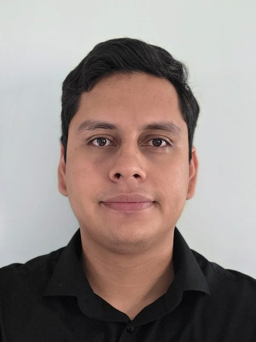

Julio Cesar Rodriguez Cervantes
PhD Student in Electrical Engineering · CINVESTAV Guadalajara
Multi-UAV systems · Bearing-only formation control · State estimation on S²
My research focuses on cooperative control of multi-UAV systems using only bearing measurements — no GPS, no distance sensors. Using robust nonlinear control techniques, I design formation controllers and state estimators that operate directly on the unit sphere S², enabling scalable drone swarms for GPS-denied environments.
Education
Doctorado en Ciencias, Especialidad en Ingeniería Eléctrica
- Focus: bearing-based formation control strategies for quad-rotor systems, contributing to advancements in multi-agent coordination.
- Designed and analyzed novel distributed control algorithms to enhance the autonomy and robustness of UAV swarms.
- Developed high-fidelity simulations in MATLAB and Python to validate theoretical control models and algorithm performance.
- Engineered a custom experimental platform with ROS 2, Gazebo Ionic, and an ESP32-Drone for hardware-in-the-loop (HIL) validation of control strategies.
- Project: github.com/juliordzcer/bebop_ros
- Funded by SECIHTI (Secretaría de Ciencia, Humanidades, Tecnología e Innovación).
Maestro en Ciencias en Ingeniería Eléctrica, Mecatrónica y Control Automático
- Thesis: formation controllers for quad-rotor type multi-agent systems, focusing on precise control and coordination among multiple drones.
- Designed and developed controllers for multiple aerial mobile nano robots, optimizing performance and behavior across scenarios.
- Created a ROS-based platform to facilitate coordination and communication of multiple vehicles in R&D projects.
- Established Git repositories for version control and project collaboration.
Ingeniero en Mecatrónica, Automatización y Control
- Professional internship (dic. 2020 – jun. 2021): developed the control subsystem for a two-degree-of-freedom cooperating table for an arc welding robot, optimizing motion trajectories and coordination with the robot.
- Designed, assembled, and integrated the control cabinet; programmed the cooperative table positioning control system and implemented communication protocols with a Fanuc ARC Mate 100iC welding robot.
Experience
Adjunct Professor — Academy of Health Sciences
- Design and teach Analog, Digital, and Power Electronics.
- Design and teach Analysis and Design of Electronic Circuits.
- Design and teach Advanced Programming.
- Design and teach Kinetics and Dynamics.
Mechatronic Engineer
- Supported spare-parts warehouse operations (inbound and outbound), including material reception, storage, and preparation, using SAP for inventory management.
- Involved in the installation and configuration of LGV (Laser Guided Vehicle) robots and conveyor systems.
Project Control Assistant
- Collaborated with the CFE-Andritz-Hydroproject and CFE-Andritz-Seisa consortia on the repowering and modernization of the “Peñitas” and “Angostura” hydroelectric power plants.
- Oversaw contractual work schedules to ensure compliance with deadlines.
- Managed additional and extraordinary works, including reworks and incident handling.
- Oversaw inbound shipments at the warehouse and tracked material delivery at the construction site.
- Monitored personnel attendance records and man-hours worked per activity.
- Reconciled contractual schedules with stakeholders.
Adjunct Professor — Department of Basic Sciences
- Design and teach Differential Equations course.
- Design and teach Integral Calculus course.
Publications
- Bearing-Only Super-Twisting Control for Multi-Quadrotor Formations — IEEE CCE 2025
- Formation Control Design for Multi-Quad-Rotors with Experimental Validation — CNCA 2023
- Diseño de Control de Formación basado en Modos Deslizantes para un Grupo de Quad-Rotors — COMRob 2023
- Optimal Motions of a Welding Robot for Cooperative Tasks with a 2 DOF Positioner — COMRob 2021
Stack